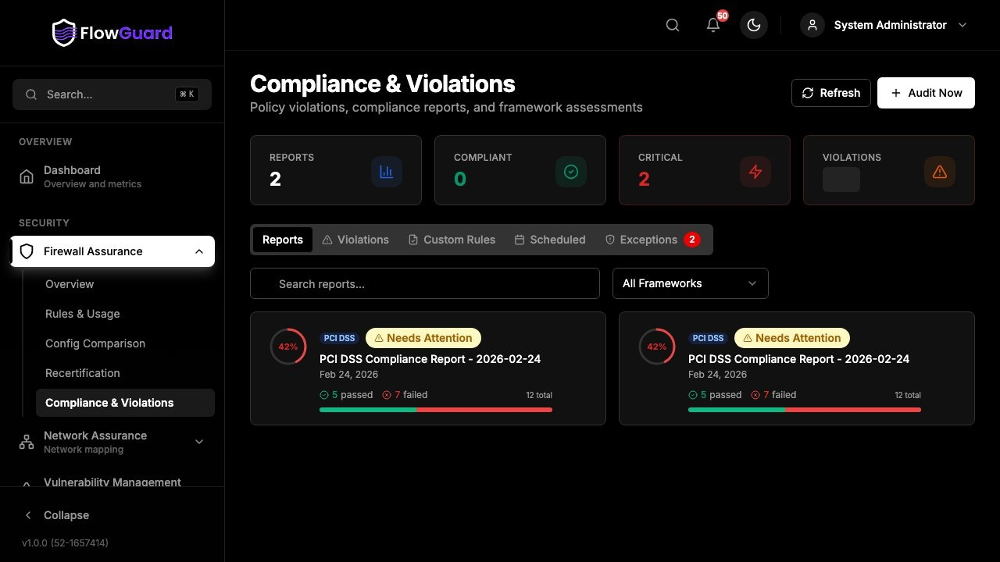
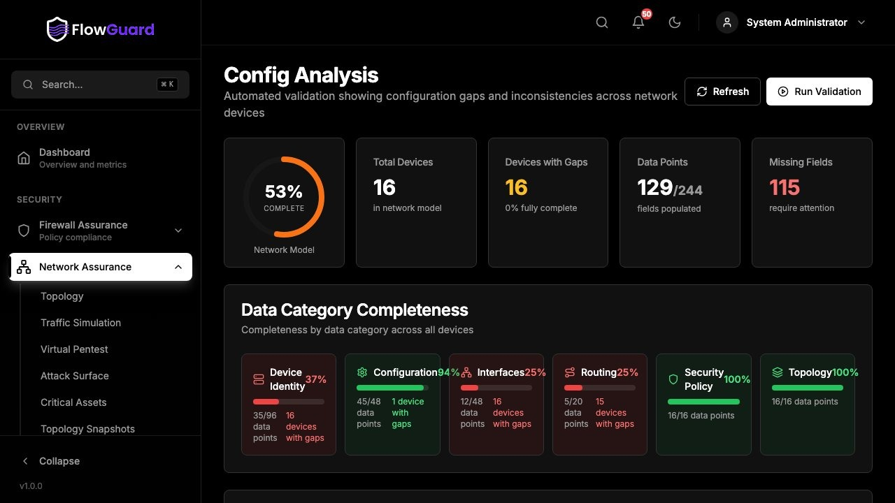
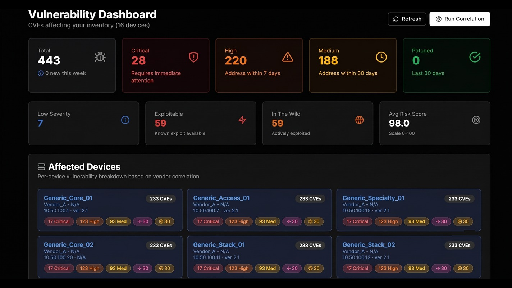
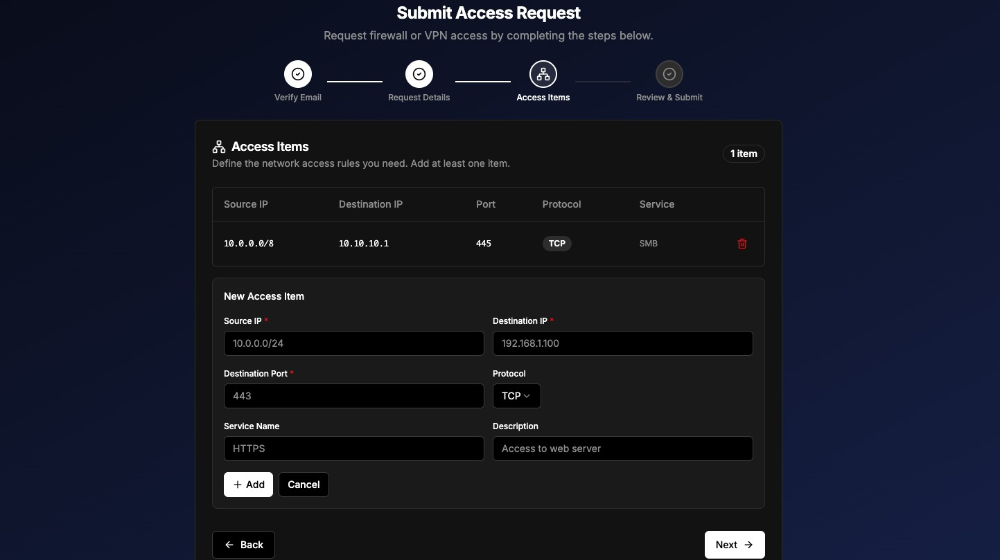

Complete visibility, control, and resilience across every connection.
FlowGuard unifies firewall assurance, network assurance, and vulnerability control in a single platform — mapping hybrid environments, simulating attack paths, and correlating exposure with real business risk so nothing stays hidden.
One platform for policy, topology, and exposure.
At its core, FlowGuard brings together four disciplines that are usually managed in separate tools: firewall policy management, network topology and segmentation validation, vulnerability prioritization, and the operational workflow that ties changes and access requests together. By continuously mapping hybrid networks, simulating attack paths, and correlating vulnerabilities with real reachability, FlowGuard helps security teams eliminate blind spots, optimize configurations, and focus remediation where it actually reduces risk — all while automating the compliance evidence auditors ask for.
Unified console
A single, intuitive interface for data collection, analysis, and reporting — with full automation of routine management tasks.
Secure, scalable architecture
Encrypted communications, role-based access control, and multi-factor authentication protect distributed and air-gapped sites alike.
Flexible deployment
Runs as software, a virtual appliance, or a hardware appliance, with active/passive resiliency and next-business-day hardware replacement.
Powerful analytics & search
A built-in search engine with dual databases powers advanced queries, dashboards, and one-click PDF reporting.
Autonomous collectors
Deployed at remote or air-gapped sites to minimize data transfer while keeping processing secure and sequential before central analysis.
Four modules. One assurance workflow.
Firewall Assurance
The foundation of FlowGuard's policy management, delivering complete visibility and control over firewall configurations across multi-vendor environments — keeping policy optimized, compliant, and aligned with the business.
- Multi-vendor rule analysis that surfaces redundant, shadowed, and conflicting rules.
- Automated policy optimization to streamline rule sets and improve performance.
- Continuous compliance checks against regulatory frameworks and internal standards.
- Change validation workflows that assess impact before a rule change ships.
- Centralized visibility into every firewall policy across distributed sites.

01 — FirewallNetwork Assurance
Complete visibility into hybrid infrastructure, validating that network configuration, segmentation, and connectivity align with security and business requirements — by continuously modeling topology and simulating attack paths.
- End-to-end topology mapping — an always-current model of on-prem, cloud, and OT networks.
- Segmentation & Zero Trust validation — confirms security zones are enforced as designed.
- Attack path simulation — surfaces lateral movement risk and misconfigurations before they're exploited.
- Change impact analysis — predicts how a proposed change affects security and connectivity.
- Continuous compliance — validates networks against regulatory and internal segmentation policy.

02 — NetworkVulnerability Control
Extends FlowGuard's assurance capabilities by continuously identifying, assessing, and prioritizing security exposure across on-premise, cloud, and hybrid environments. Rather than a flat scan-and-list approach, it correlates threat intelligence, asset criticality, and network reachability to determine the real business risk behind every vulnerability — with automated scoring, remediation guidance, and compliance alignment that keeps teams focused on what matters most.

03 — VulnerabilityOperations Management
A single system of record for every policy change, exception, and access request — replacing scattered tickets and email threads with structured, auditable workflows that keep network and security teams in sync.
- Unified change & exception handling — every policy modification, security exception, and recertification flows through one pane of glass, creating a definitive record of operational change.
- Automated workflow & lifecycle management — approval and rejection routing runs itself, with automated reminders, follow-up tracking, and an audit-ready trail for every decision.
- Self-service request portal — a frictionless portal lets developers, staff, and contractors submit firewall or VPN access requests without needing a network-team account.
- Passwordless verification & pre-analyzed routing — secure, email-based authentication confirms the requester's identity, while FlowGuard pre-runs compliance and impact analysis so network teams get a fully analyzed ticket ready for a simple approve or reject.

04 — Operations